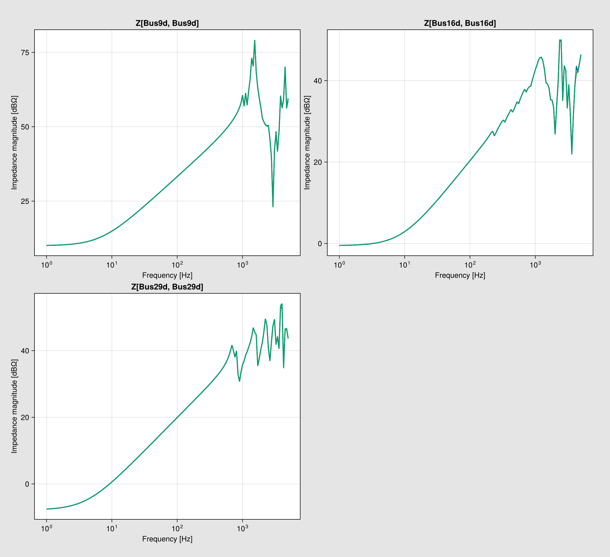

IEEE39 Gridspace soil-resistivity study
This example reuses the NetworkBuilder model exercised by the IEEE39 parity tests and applies one shared soil-resistivity grid to every overhead line and cable. Driving-point harmonic impedances at three representative buses are overlaid for direct comparison.
using CairoMakie
using PowerImpedance
using PowerImpedance.NetworkBuilder: Grid, Gridspace, NetworkState, defineThe parity fixture is the authoritative NetworkBuilder version of this system. Skip its top-level testsets while retaining its model functions and constants. This keeps the example synchronized with the parity test rather than maintaining a second thousand-line copy of the system.
function include_ieee39_networkbuilder_fixture()
isdefined(@__MODULE__, :ieee39bus_elements) && return nothing
skip_testsets(expression) =
if expression isa Expr &&
expression.head === :macrocall &&
expression.args[1] === Symbol("@testset")
:(nothing)
else
expression
end
path = joinpath(pkgdir(PowerImpedance), "test", "NetworkBuilder_test.jl")
Base.include(skip_testsets, @__MODULE__, path)
return nothing
end;
include_ieee39_networkbuilder_fixture();The requested input repeats 1000 Ωm. Duplicate values produce identical solves and curves, so the grid retains its three unique physical cases.
const IEEE39_REQUESTED_SOIL_RESISTIVITY = (10.0, 100.0, 1000.0, 1000.0)
const IEEE39_SOIL_RESISTIVITY = Tuple(unique(IEEE39_REQUESTED_SOIL_RESISTIVITY))
const IEEE39_REPRESENTATIVE_BUSES = (9, 16, 29)
const IEEE39_BUILDER_OPTIONS = (;
voltageBase = Vm1,
power_flow = (; is_bounded = (; bus_voltage = true))
);Apply one resistivity value everywhere
function element_at_soil_resistivity(element, soil_resistivity)
model = element.element_model
if model isa PowerImpedance.Overhead_line
return overhead_line(
length = model.length,
conductors = deepcopy(model.conductors),
groundwires = deepcopy(model.groundwires),
earth_parameters = (
model.earth_parameters[1],
model.earth_parameters[2],
soil_resistivity
),
transformation = element.transformation,
connection = element.connection
)
elseif model isa PowerImpedance.Cable
conductors = NamedTuple{Tuple(keys(model.conductors))}(
Tuple(deepcopy(value) for value in values(model.conductors)),
)
insulators = NamedTuple{Tuple(keys(model.insulators))}(
Tuple(deepcopy(value) for value in values(model.insulators)),
)
return cable(;
length = model.length,
positions = deepcopy(model.positions),
earth_parameters = (
model.earth_parameters[1],
model.earth_parameters[2],
soil_resistivity
),
configuration = model.configuration,
type = model.type,
eliminate = model.eliminate,
transformation = element.transformation,
connection = element.connection,
conductors...,
insulators...
)
end
return deepcopy(element)
end;
function ieee39_elements_at_soil_resistivity(base_elements, soil_resistivity)
names = keys(base_elements)
elements = map(values(base_elements)) do element
element_at_soil_resistivity(element, soil_resistivity)
end
return NamedTuple{names}(Tuple(elements))
end;One Grid axis changes all line models together. The resulting coordinates identify each case as soil_resistivity = 10, 100, or 1000 Ωm.
function ieee39_soil_builder_space(
soil_resistivities = IEEE39_SOIL_RESISTIVITY;
base_elements = ieee39bus_elements()
)
connections = ieee39bus_connections()
function materialize(soil_resistivity)
return define(
ieee39_elements_at_soil_resistivity(base_elements, soil_resistivity),
connections;
options = IEEE39_BUILDER_OPTIONS
)
end
return Gridspace{NetworkState}(
materialize,
(Grid(soil_resistivities),),
(:soil_resistivity,)
)
end;Soil resistivity changes the passive frequency-domain models. Each case owns its power flow and linearization, which keeps calculation state out of the network definitions.
function ieee39_bus_nets(buses)
return reduce(vcat, ([Symbol("Bus$(bus)d"), Symbol("Bus$(bus)q")] for bus in buses))
end;
function run_ieee39_soil_study(;
soil_resistivities = IEEE39_SOIL_RESISTIVITY,
buses = IEEE39_REPRESENTATIVE_BUSES,
freq_range = (1.0, 5e3, 400)
)
base_elements = ieee39bus_elements()
networks = ieee39_soil_builder_space(soil_resistivities; base_elements)
problems = PowerImpedanceProblem(
networks;
nodes=ieee39_bus_nets(buses),
eliminated_elements=IEEE39_ELIM_ELEMENTS,
frequency_range=freq_range,
)
result = compute(
ParametricProblem(problems),
Combinatorial(NodalImpedance()),
)
return (;
soil_resistivities = collect(soil_resistivities), buses = collect(buses), result)
end;Overlay the harmonic impedances
The d-axis diagonal entry is used as the driving-point impedance at each bus. maximum_spread_db quantifies whether soil resistivity visibly separates the curves and makes the sensitivity check reproducible. A reduced validation scan gave maximum separations of about 0.97 dB at Bus 9, 0.82 dB at Bus 16, and 1.08 dB at Bus 29, so soil resistivity remains a visible KPI and no fallback parameter scan is needed.
function ieee39_impedance_db(case, bus_index)
net_index = 2bus_index - 1
return 20 .* log10.(abs.(vec(case.response[net_index, net_index, :])))
end;
function maximum_spread_db(study, bus_index)
curves = hcat((ieee39_impedance_db(case, bus_index) for case in study.result.values)...)
return maximum(maximum(curves; dims = 2) .- minimum(curves; dims = 2))
end;
function plot_ieee39_soil_study(study)
entries = [(2index - 1, 2index - 1) for index in eachindex(study.buses)]
labels = ["ρsoil = $(value) Ωm" for value in study.soil_resistivities]
groups = [Symbol("soil_", replace(string(value), "." => "_"))
for value in study.soil_resistivities]
handles = PowerImpedance.plot(
study.result;
entries,
grouping=:panels,
labels,
series_groups=groups,
title="IEEE39 harmonic impedance versus common soil resistivity",
figure_size=(1150, 1050),
display_plot=false,
controls=false,
)
return only(handles)
end;The documentation evaluates the same three physical cases with a reduced frequency grid. Running this source file directly uses the full defaults.
ieee39_docs_study = run_ieee39_soil_study(; freq_range = (1.0, 5e3, 160))
ieee39_docs_plot = plot_ieee39_soil_study(ieee39_docs_study)
ieee39_docs_plot.figure
Back to Examples